Animales y naturaleza
251 recursos de Animales y naturaleza en español, sin preparación y con solucionario: fichas de lectura, búsquedas del tesoro y más, filtrables por grado.
251 recursos
Grado
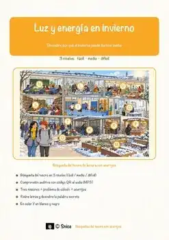
«Luz y energía en invierno» – Búsqueda del tesoro de lectura
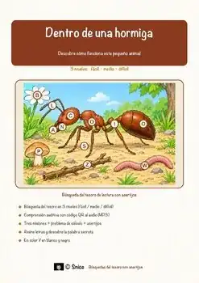
«Dentro de una hormiga» – Búsqueda del tesoro de lectura
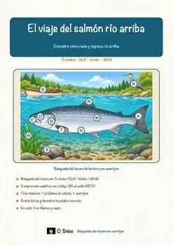
«El viaje del salmón río arriba» – Búsqueda del tesoro de lectura
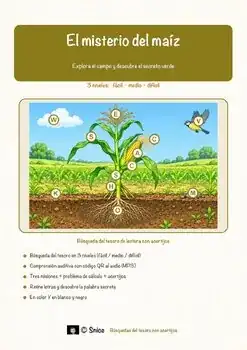
«El misterio del maíz» – Búsqueda del tesoro de lectura
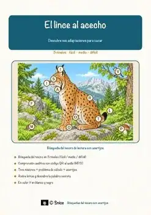
«El lince al acecho» – Búsqueda del tesoro de lectura
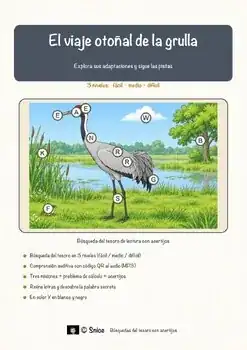
«El viaje otoñal de la grulla» – Búsqueda del tesoro de lectura
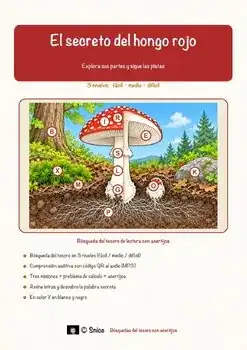
«El secreto del hongo rojo» – Búsqueda del tesoro de lectura
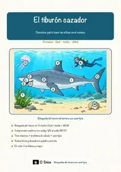
«El tiburón cazador» – Búsqueda del tesoro de lectura
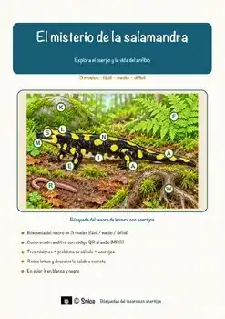
«El misterio de la salamandra» – Búsqueda del tesoro de lectura
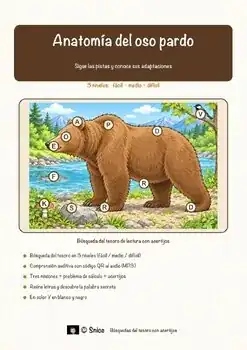
«Anatomía del oso pardo» – Búsqueda del tesoro de lectura
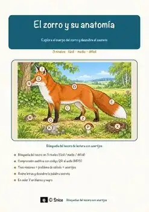
«El zorro y su anatomía» – Búsqueda del tesoro de lectura
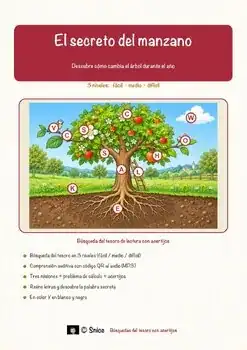
«El secreto del manzano» – Búsqueda del tesoro de lectura
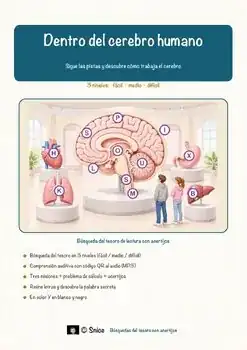
«Dentro del cerebro humano» – Búsqueda del tesoro de lectura
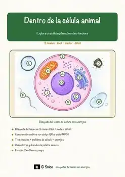
«Dentro de la célula animal» – Búsqueda del tesoro de lectura
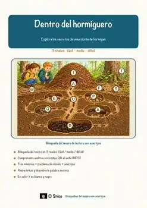
«Dentro del hormiguero» – Búsqueda del tesoro de lectura
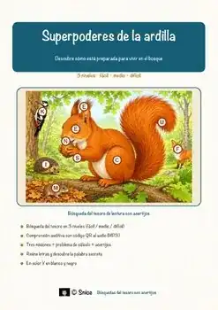
«Superpoderes de la ardilla» – Búsqueda del tesoro de lectura

«Animales en el bosque invernal» – Búsqueda del tesoro de lectura

«Centro de rescate de erizos» – Búsqueda del tesoro de lectura

«Alimentación de animales en invierno» – Búsqueda del tesoro de lectura

«La cosecha de otoño» – Búsqueda del tesoro de lectura

«Un festín en el bosque» – Búsqueda del tesoro de lectura

«Semillas al viento» – Búsqueda del tesoro de lectura

«El misterio del hielo en el techo» – Búsqueda del tesoro de lectura
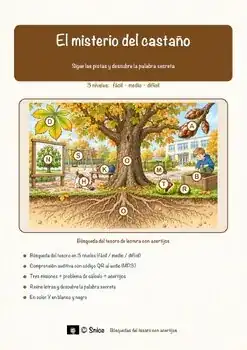
«El misterio del castaño» – Búsqueda del tesoro de lectura

«El huerto de manzanas» – Búsqueda del tesoro de lectura

«Aventura en el sótano de manzanas» – Búsqueda del tesoro de lectura
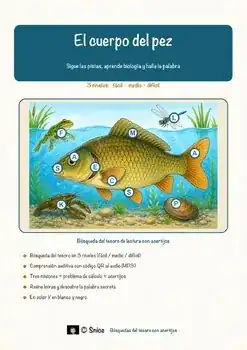
«El cuerpo del pez» – Búsqueda del tesoro de lectura
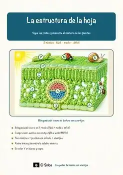
«La estructura de la hoja» – Búsqueda del tesoro de lectura
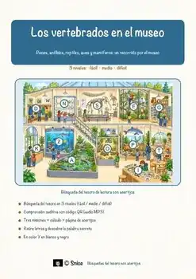
«Los vertebrados en el museo» – Búsqueda del tesoro de lectura
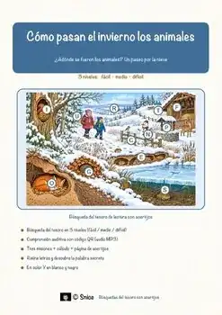
«Cómo pasan el invierno los animales» – Búsqueda del tesoro de lectura
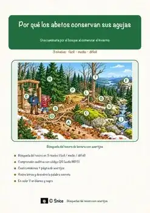
«Por qué los abetos conservan sus agujas» – Búsqueda del tesoro de lectura
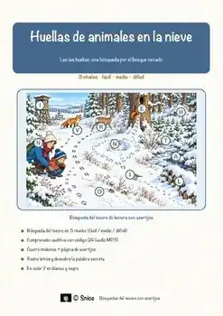
«Huellas de animales en la nieve» – Búsqueda del tesoro de lectura
Aves – Ficha de lectura: texto con huecos, comprensión auditiva y sopa de letras
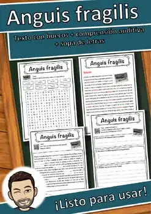
Anguis fragilis – Ficha de lectura: texto con huecos, comprensión auditiva y sopa de letras
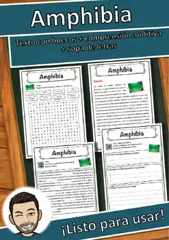
Amphibia – Ficha de lectura: texto con huecos, comprensión auditiva y sopa de letras
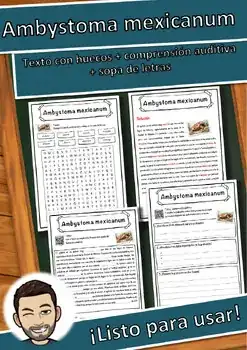
Ambystoma mexicanum – Ficha de lectura: texto con huecos, comprensión auditiva y sopa de letras
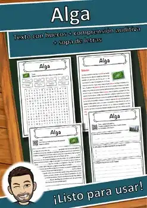
Alga – Ficha de lectura: texto con huecos, comprensión auditiva y sopa de letras
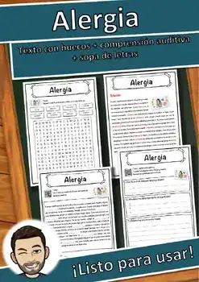
Alergia – Ficha de lectura: texto con huecos, comprensión auditiva y sopa de letras
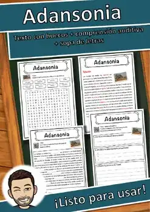
Adansonia – Ficha de lectura: texto con huecos, comprensión auditiva y sopa de letras
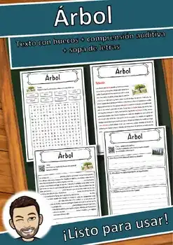
Árbol – Ficha de lectura: texto con huecos, comprensión auditiva y sopa de letras
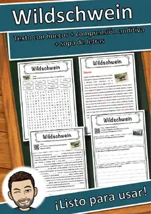
Jabalí – Ficha de lectura: texto con huecos, comprensión auditiva y sopa de letras
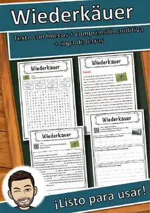
Rumiantes – Ficha de lectura: texto con huecos, comprensión auditiva y sopa de letras
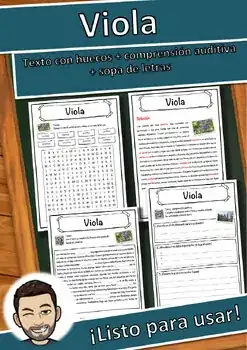
Viola – Ficha de lectura: texto con huecos, comprensión auditiva y sopa de letras
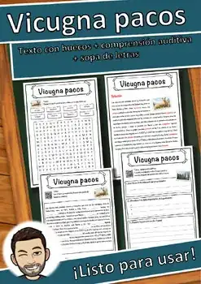
Vicugna pacos – Ficha de lectura: texto con huecos, comprensión auditiva y sopa de letras
Vertebrata – Ficha de lectura: texto con huecos, comprensión auditiva y sopa de letras
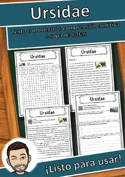
Ursidae – Ficha de lectura: texto con huecos, comprensión auditiva y sopa de letras
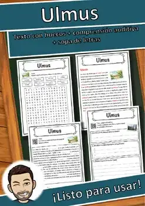
Ulmus – Ficha de lectura: texto con huecos, comprensión auditiva y sopa de letras
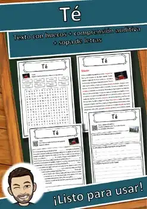
Té – Ficha de lectura: texto con huecos, comprensión auditiva y sopa de letras
No se encontraron recursos. Prueba con otra palabra o con otro filtro.